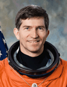

Lyndon B. Johnson Space Center
Houston, Texas 77058
|
National Aeronautics and Space Administration Lyndon B. Johnson Space Center Houston, Texas 77058 |
 |
Biographical Data |
||
Fred W. Leslie (Ph.D.)
Payload Specialist
PERSONAL DATA: Born December 19, 1951, in Ancon, Panama. Fred and wife Kathy reside in Huntsville, Alabama. With more than 5,500 parachute jumps, he enjoys skydiving and has earned multiple world records as a participant in large freefall formations including the current record 400-person formation. Leslie is an instrument rated, multiengine, commercial pilot with more than 1500 hours in various aircraft. He also likes motorcycling, running, and weight training.
EDUCATION: Graduated from Irving High School, Irving, Texas, in 1970; received a bachelor of science degree in engineering science from the University of Texas in 1974, and Master’s and Ph.D. degrees in meteorology with a minor in fluid mechanics from the University of Oklahoma in 1977 and 1979, respectively. He continued with post-doctoral studies in atmospheric science at Purdue University.
ORGANIZATIONS: Served on the American Institute of Aeronautics and Astronautics Fluid Dynamics Technical Committee, Tau Beta Pi, Chi Epsilon Pi, the United States Parachute Association, the Association of Space Explorers, and the Aircraft Owners and Pilots Association.
EXPERIENCE: After Dr. Leslie earned his Ph.D. in 1979, he served as a post doctoral research associate at Purdue University studying fluid vortex dynamics. In 1980, he worked for the Universities Space Research Association as a visiting scientist at the Marshall Space Flight Center (MSFC).
NASA EXPERIENCE: Leslie began work for NASA in 1980 as a research scientist in the Space Science Laboratory at MSFC. He served as a co-investigator for the Geophysical Fluid Flow Cell experiment which examines spherical rotating convection relevant to the atmospheres of stars and planets. The experiment flew on Spacelab 3 and was also part of the United States Microgravity Laboratory-2 (USML-2) payload. Leslie was a principal investigator for the Fluid Interface and Bubble Experiment examining the behavior of a rotating free surface aboard NASA’s KC-135 aircraft flying low-gravity trajectories. He has authored numerous journal and conference papers, as well as NASA reports involving atmospheric and fluid dynamic phenomena. Leslie also worked in the MSFC Neutral Buoyancy Simulator as a suited subject and safety diver supporting procedure tests for extravehicular activity.
In 1987, he became chief of the Fluid Dynamics Branch where he directed and conducted research in both laboratory and theoretical investigations along with other scientists in the Branch. He was also the mission scientist for Spacelab J (STS-47) coordinating more than 40 domestic and Japanese experiments in fluid dynamics, crystal growth, and life science during the 8‑day mission. In 1994, Leslie became Deputy Chief of the Earth System Science Division at Marshall before being selected as a payload specialist.
SPACE FLIGHT EXPERIENCE: Dr. Leslie flew as a payload specialist on STS-73 launched on October 20, 1995 and landed at the Kennedy Space Center on November 5, 1995. The 16-day mission aboard Columbia focused on materials science, biotechnology, combustion science, and fluid physics contained within the pressurized Spacelab module. He has logged 382 hours in space.
CURRENT ASSIGNMENT: Dr. Leslie is an aerospace engineer at the MSFC in Huntsville, Alabama. He is involved with global atmospheric modeling and turbulence.
JANUARY 2011
This is the only version available from NASA. Updates must be sought direct from the above named individual.
{kind=link}